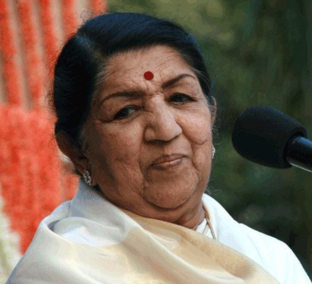

Lata Mangeshkar
She is widely considered to have been one of the greatest and most influential singers in India

Lata Mangeshkar(28 September 1929 – 6 February 2022)
A short biography of Lata Mangeshkar
- Lata was born on September 28, 1929 in Indore, Madhya Pradesh.
- Her father started teaching her music at an early age. By the time she was five, Lata was seen participating as an actress in plays written by her father.
- Her siblings - Meena, Asha, Usha, and Hridaynath - are all accomplished singers and musicians.
- Lata Mangeshkar was the singing voice for a bevy of Bollywood leading ladies.
- She lent her voice to over 5,000 songs in over a thousand Hindi and 36 regional films.
- She had an unprecedented impact on Indian film music. Since 1942, Lata pushed back the boundaries of music with her mind-boggling skills
- Over the years, Lata had sung for actresses from Madhubala to Priyanka Chopra. Best known for her versatile voice quality, she recorded albums of all kinds (ghazals, pop, etc).
- Lata Mangeshkar held the distinction of being the most recorded artist in the history of Indian music in Guinness Record in 1974.
- The Indian government honoured her with the Daughter of the Nation award on her 90th birthday in September 2019.
-
The book entitled "Lata Mangeshkar: A Musical Journey" contains little known facts intertwined with the story of her life in music, struggles, successes and her reign as the Queen of Hindi music from the 1940s to the present day.
- On November 11, 2019 Lata Mangeshkar was admitted to the Breach Candy Hospital, in South Mumbai after she complained of difficulty in breathing. According to latest reports, while she is recovering gradually, her condition remains critical.
- Lata Mangeshkar passed away on February 6, 2022.
"I have decieded that I won't take up assignments that don't take interest me"
---Lata Mangeshkar
If you have time , should read more about this incridible human being on her wikipedia entry